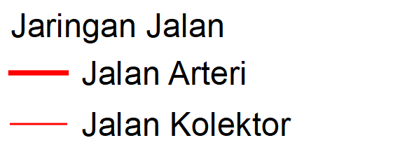
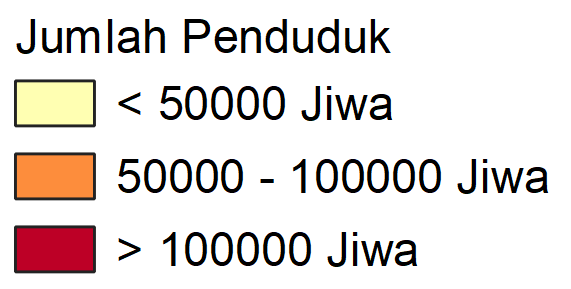

<!DOCTYPE html>
<html>
<head>
	<title>Leaflet Legend</title>

	<meta charset="utf-8" />
	<meta name="viewport" content="width=device-width, initial-scale=1.0">
	
	<link rel="icon" type="image/x-icon" href="assets/img/icon.png" />

  <link rel="stylesheet" href="https://unpkg.com/leaflet@1.7.1/dist/leaflet.css" />
	<script src="https://unpkg.com/leaflet@1.7.1/dist/leaflet.js"></script>
	<script src="https://code.jquery.com/jquery-3.4.1.min.js"></script>
	<style>
		html, body, #map {
			width: 100%;
			height: 100%;
      margin: 0px;
		}
		.legend {
			padding: 6px 8px;
			font: 14px/16px Arial, Helvetica, sans-serif;
			background: rgba(255,255,255,0.8);
			box-shadow: 0 0 15px rgba(0,0,0,0.2);
			border-radius: 5px;
		}
		.legend h4 {
			margin: 0 0 5px;
			color: #777;
		}
	</style>
	</head>
	<body>
		<div id='map'></div>

		<script type="text/javascript">
			var map = L.map('map').setView([-7.9,110.45], 10);

			L.tileLayer('https://{s}.tile.openstreetmap.org/{z}/{x}/{y}.png', {
				attribution: 'OSM'
			}).addTo(map);

			// Control legend
			var legend = L.control({position: 'bottomleft'}), labels;

			legend.onAdd = function (map) {
				this._div = L.DomUtil.create('div', 'legend'), labels = [];
				this.update();
				return this._div;
			};

			legend.update = function () {
				this._div.innerHTML = '<h4>Legenda</h4><hr>' + labels.join('<hr>');
			};

			legend.addTo(map);

			/* GeoJSON Point */
			var titikkabkota = L.geoJson(null, {
				onEachFeature: function (feature, layer) {
					if (feature.properties) {
						layer.on({
							mouseover: function (e) {
								titikkabkota.bindTooltip(feature.properties.KAB_KOTA);
							}
						});
					}
				}
			});
			$.getJSON("data/kabupaten_kota_diy_point.geojson", function (data) {
				titikkabkota.addData(data);
				map.addLayer(titikkabkota);
			});

			/* GeoJSON Polyline */
			map.createPane("pane_jalanutama");
			map.getPane("pane_jalanutama").style.zIndex = 401;
			var layerWidth = {"Jalan Arteri":3, "Jalan Kolektor":1};
			var jalanutama = L.geoJson(null, {
				pane: "pane_jalanutama",
				style: function (feature) {
					return {
						color: "red",
						weight: layerWidth[feature.properties.KETERANGAN],
						opacity: 1,
						interactive: false,
					};
				}
			});
			$.getJSON("data/jalan_utama_line.geojson", function (data) {
				jalanutama.addData(data);
				map.addLayer(jalanutama);
			});

			/* GeoJSON Polygon */
			map.createPane("pane_adminkecamatan");
			map.getPane("pane_adminkecamatan").style.zIndex = 301;
			var layerColors = {"Tinggi":"#bd0026", "Sedang":"#fd8d3c", "Rendah":"#ffffb2"};
			var adminkecamatan = L.geoJson(null, {
				pane:"pane_adminkecamatan",
				style: function (feature) {
					return {
						fillColor: layerColors[feature.properties.klas_jml],
						fillOpacity: 0.7, 
						color: "black", 
						weight: 1,
						opacity: 1,
					};
				},
				onEachFeature: function (feature, layer) {
					layer.on({
						mouseover: function (e) { 
							var layer = e.target;
							layer.setStyle({
								weight: 2,
								color: "gray",
								opacity: 1,
								fillColor: "#00FFFF",
								fillOpacity: 1,
							});
							adminkecamatan.bindTooltip(feature.properties.KECAMATAN + ', ' + feature.properties.KABUPATEN); //Popup
						},
						mouseout: function (e) {
							adminkecamatan.resetStyle(e.target);
						},
						click: function (e) {
							map.fitBounds(e.target.getBounds());
						}
					});
				}
			});
			$.getJSON("data/penduduk_kecamatan_diy_polygon.geojson", function (data) {
				adminkecamatan.addData(data);
				map.addLayer(adminkecamatan);
			});

			// Control Layer
			var Layers = {
				'Ibukota Kabupate/Kota': titikkabkota,
				'Jalan Utama': jalanutama,
				'Batas Kecamatan': adminkecamatan,
			};
			var layerControl = L.control.layers(null, Layers, {collapsed:false});
			layerControl.addTo(map);

			// Legend for each layer
			var legend_titikkabkota = ' Ibukota Kab/Kota',
			legend_jalanutama = '',
			legend_adminkecamatan = '';

			map.on("overlayadd", function(e) {
				if (e.layer === titikkabkota) {
					labels.push(legend_titikkabkota);
					legend.update();
				}
				if (e.layer === jalanutama) {
					labels.push(legend_jalanutama);
					legend.update();
				}
				if (e.layer === adminkecamatan) {
					labels.push(legend_adminkecamatan);
					legend.update();
				}
			});

			map.on("overlayremove", function(e) {
				if (e.layer === titikkabkota) {
					for( var i = 0; i < labels.length; i++){
						if ( labels[i] === legend_titikkabkota) {
							labels.splice(i, 1);
						}
					}
					legend.update();
				}
				if (e.layer === jalanutama) {
					for( var i = 0; i < labels.length; i++){
						if ( labels[i] === legend_jalanutama) {
							labels.splice(i, 1);
						}
					}
					legend.update();
				}
				if (e.layer === adminkecamatan) {
					for( var i = 0; i < labels.length; i++){
						if ( labels[i] === legend_adminkecamatan) {
							labels.splice(i, 1);
						}
					}
					legend.update();
				}
			});
		</script>
	</body>
</html>
